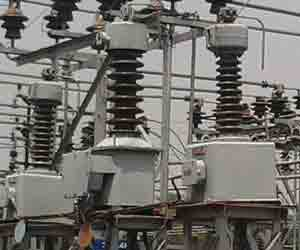
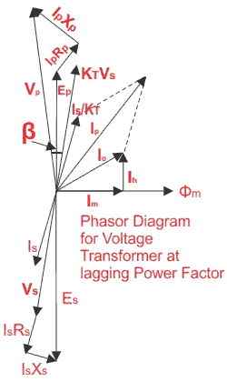

Voltage Transformer or Potential Transformer Theory
Potential Transformer Definition
Potential transformer or voltage transformer gets used in electrical power system for stepping down the system voltage to a safe value which can be fed to low ratings meters and relays. Commercially available relays and meters used for protection and metering, are designed for low voltage. This is a simplest form of potential transformer definition.
Voltage Transformer or Potential Transformer Theory
A voltage transformer theory or potential transformer theory is just like a theory of general purpose step down transformer. Primary of this transformer is connected across the phase and ground. Just like the transformer used for stepping down purpose, potential transformer i.e. PT has lower turns winding at its secondary. The system voltage is applied across the terminals of primary winding of that transformer, and then proportionate secondary voltage appears across the secondary terminals of the PT.

The secondary voltage of the PT is generally 110 V. In an ideal potential transformer or voltage transformer, when rated burden gets connected across the secondary; the ratio of primary and secondary voltages of transformer is equal to the turns ratio and furthermore, the two terminal voltages are in precise phase opposite to each other. But in actual transformer, there must be an error in the voltage ratio as well as in the phase angle between primary and secondary voltages.
The errors in potential transformer or voltage transformer can be best explained by phasor diagram, and this is the main part of potential transformer theory.
Error in PT or Potential Transformer or VT or Voltage Transformer

Is - Secondary current.
Es - Secondary induced emf.
Vs - Secondary terminal voltage.
Rs - Secondary winding resistance.
Xs - Secondary winding reactance.
Ip - Primary current.
Ep - Primary induced emf.
Vp - Primary terminal voltage.
Rp - Primary winding resistance.
Xp - Primary winding reactance.
KT - Turns ratio = Numbers of primary turns/number of secondary turns.
I0 - Excitation current.
Im - Magnetizing component of I0.
Iw - Core loss component of I0.
Φm - Main flux.
β - Phase angle error.
As in the case of current transformer and other purpose electrical power transformer, total primary electric current Ip is the vector sum of excitation electric current and the electric current equal to reversal of secondary electric current multiplied by the ratio 1/KT.
Hence,Ip = I0 + Is/KT
If Vp is the system voltage applied to the primary of the PT, then voltage drops due to resistance and reactance of primary winding due to primary electric current Ip will come into picture. After subtracting this voltage drop from Vp, Ep will appear across the primary terminals. This Ep is equal to primary induced emf. This primary emf will transform to the secondary winding by mutual induction and transformed emf is Es. Again this Es will be dropped by secondary winding resistance and reactance, and resultant will actually appear across the burden terminals and it is denoted as Vs.
So if system voltage is Vp, ideally Vp/KT should be the secondary voltage of PT, but in reality; actual secondary voltage of PT is Vs.
Voltage Error or Ratio Error in Potential Transformer (PT) or Voltage Transformer (VT)
The difference between the ideal value Vp/KT and actual value Vs is the voltage error or ratio error in a potential transformer, it can be expressed as,
Phase Error or Phase Angle Error in Potential or Voltage Transformer
The angle ′β′ between the primary system voltage Vp and the reversed secondary voltage vectors KT.Vs is the phase error.
Cause of Error in Potential Transformer
The voltage applied to the primary of the potential transformer first drops due to the internal impedance of the primary. Then it appears across the primary winding and then transformed proportionally to its turns ratio, to the secondary winding. This transformed voltage across the secondary winding will again drop due to the internal impedance of the secondary, before appearing across burden terminals. This is the reason of errors in potential transformer.
 by
by